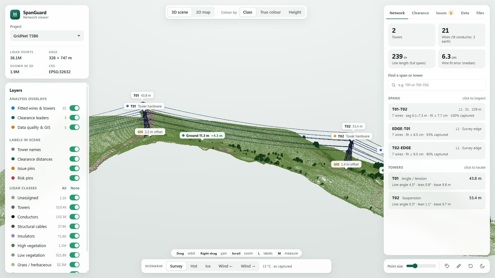
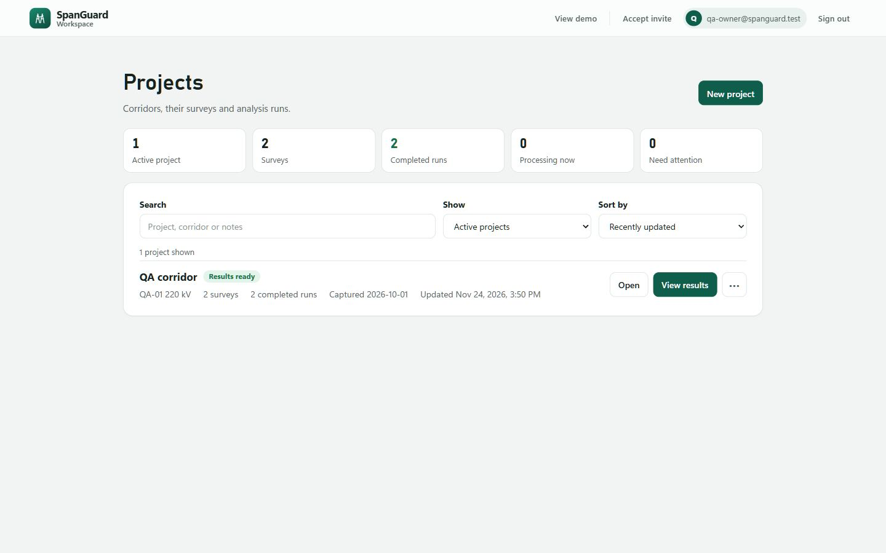
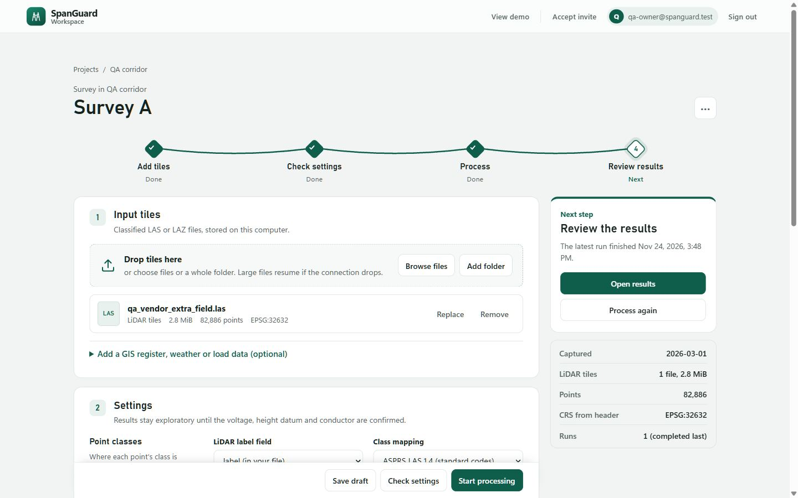
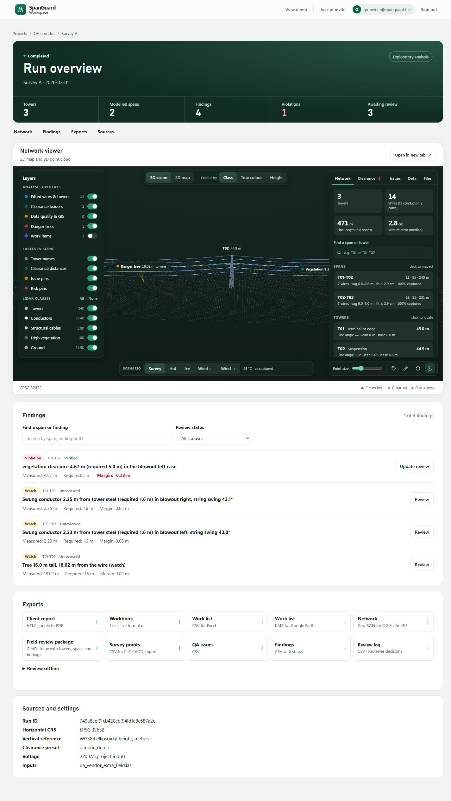
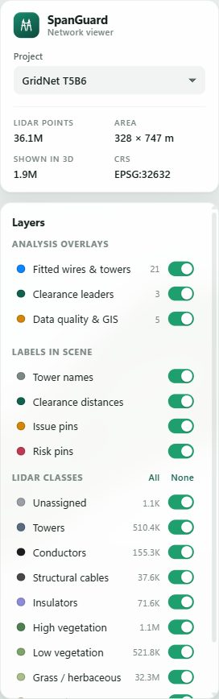
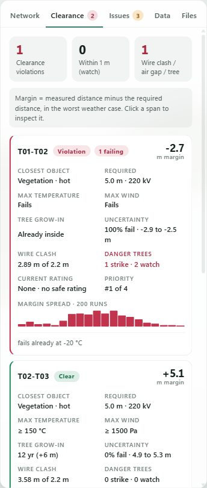
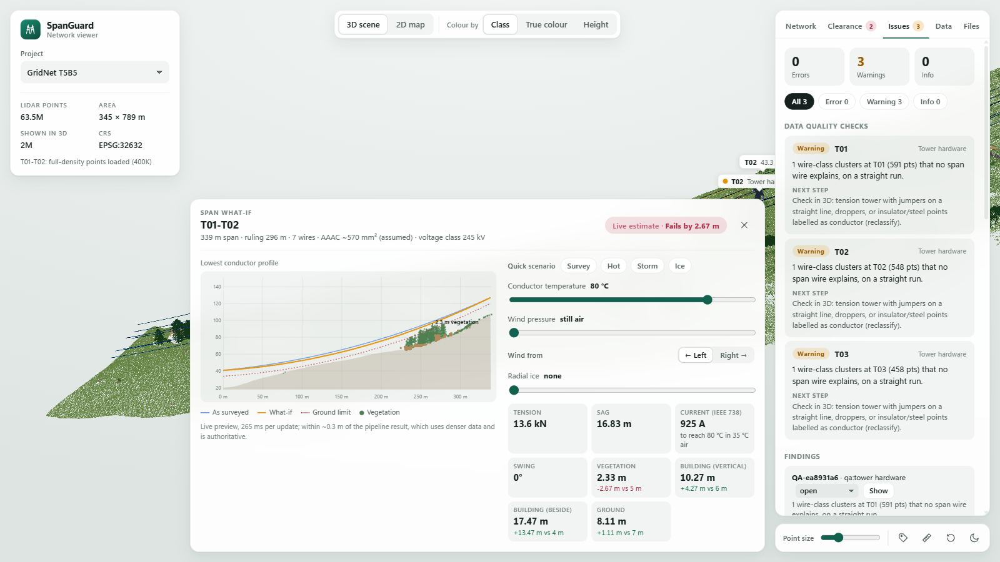
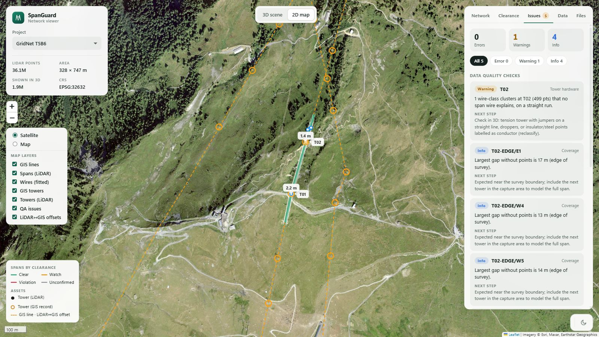
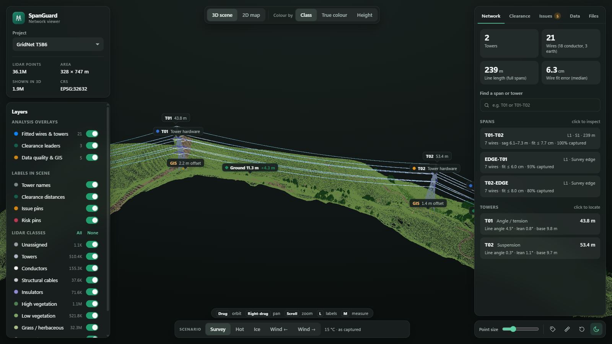
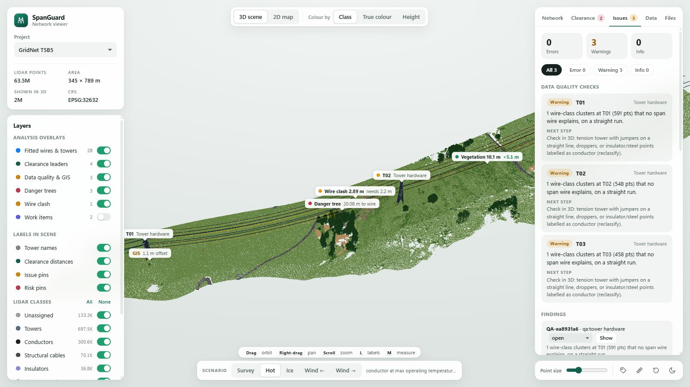

SpanGuard takes a classified LiDAR survey of an overhead power line and turns it into a checked, span-by-span answer: where the wires are, how they behave in heat, wind and ice, which spans break clearance rules, and what work should be done first.
Utilities fly drones or helicopters with laser scanners along their lines. The result is hundreds of millions of 3D points, already labelled as tower, wire, tree, ground or building. That labelling is the easy half. The work that follows is what clients pay for: modelling every wire as a curve, checking the model against the client's asset records, simulating the line in its worst weather, measuring clearances, and delivering reports, spreadsheets and GIS layers. SpanGuard automates that delivery workflow end to end, in a local workspace with a 3D viewer.
The drawing on the cover is the question it answers for every span: when the wire is at its hottest, swung by wind or loaded with ice, does it still keep the required distance from trees, ground and buildings? On demo zone t5b5 the answer for span T01-T02 is no. At 80 °C the wire comes within 2.33 m of a tree, where 5.0 m is required.
~1.3Mpoints read per second on a laptop
4.8–6.4 cmmedian wire fit error on the demo zones
5weather cases per span: survey, hot, ice, wind left and right
106automated tests, run on every push

The network viewer. Demo zone t5b6 in the Swiss Alps: 36.1 million points, two towers, 21 fitted wires. Labels show tower heights, the closest clearance per span and a data-quality pin.2
Why it exists
A wire that sags into a tree can start a fire or black out a town, so regulators set minimum distances, and utilities must prove every span meets them.
A conductor is not a fixed object. It gets longer when it heats up, so it sags lower on a hot day or when it carries a heavy current. Wind pushes it sideways. Ice makes it heavier. A survey captures the line on one particular morning, at one temperature, in calm air. The clearance that matters is the clearance in the worst case, which nobody measured.
Turning the survey into that worst case is skilled, repetitive work. An analyst has to find every tower, split the wire points into individual conductors, fit a curve to each, look up the conductor's properties, recalculate the sag for each weather case, measure distances to everything nearby, and then write it all up in the client's format. Commercial tools such as PLS-CADD and Neara exist for this. SpanGuard rebuilds the workflow from first principles to show how each step works and where each number comes from.
Built as a portfolio project. SpanGuard is a careful, tested reconstruction of an industry workflow. Conductor data, insulator strings and several clearance tables are assumptions, and every result says so. Treat its numbers as exploratory until the line's real conductor, voltage and height datum are confirmed.
3
Words used here
Fourteen terms carry most of this handbook. Each is explained once here.
Term
Meaning
Span
The stretch of line between two neighbouring towers. Results are reported per span.
Edge span
A span cut by the edge of the survey, so its far tower is missing. Checked at survey conditions only.
Conductor / earth wire
Conductors carry the current (phases). The earth wire runs on top to catch lightning.
Catenary
The curve a hanging cable makes. Its shape is set by one number, a = tension ÷ weight per metre.
Sag
How far the wire drops below the straight line between its two attachment points.
Ruling span
One equivalent span length for a run of spans between tension towers. Used to recalculate tension.
Clearance
The distance from a wire to an object: trees, ground, roads, railways, water, buildings.
Required distance
The minimum the rules allow for that object and that voltage.
Margin
Clearance minus required distance. Positive is safe, negative is a violation.
Blowout
The wire swung sideways by wind, at an angle φ = atan(wind force ÷ weight).
Weather case
A condition the line is simulated in: survey, hot (maximum operating temperature), ice, wind left, wind right.
Classification / class map
The label on each LiDAR point (tower, conductor, tree…) and the table that says which code means what.
CRS / vertical datum
The coordinate system of the points, and what their heights are measured from (ellipsoid, geoid, sea level).
Finding
Anything that needs a decision: a violation, a danger tree, a data issue. Each has a stable ID across surveys.
4
How it works
Seven stages run in order. Each stage writes files the next one reads, so any stage can be re-run, checked or replaced on its own.
The seven stages. QA and physics both start from the fitted model; clearance needs the simulated wires; every result ends up as a finding with a stable ID.
Stage 1 · Intake
Pre-flight check
Before any long job, SpanGuard reads the file header and an evenly spread sample of about one million points. On a 37-million-point file this takes about four seconds. It stops at once, with one message and a fix, if the file has no coordinate system, if the class labels are in a field that does not exist or holds only one code, if there are no wire or tower points, or if most codes are unknown. When the labels sit in another field, the workspace now suggests it by name.
ReadsLAS or LAZ header, a 1M-point sample, the class map
WritesA pass or fail report with fixes; source code → class table
Stage 2 · Intake
Audit and 3D overview
The full survey is streamed in chunks, so a file larger than memory still works. The audit counts points per class, measures density per square metre and finds holes in the terrain. Memory follows the corridor rather than the bounding box: grids are sparse 256 × 256 blocks. For the viewer, the cloud is thinned to a 0.35 m voxel grid while every conductor, insulator and earth-wire point is kept, which turns 36 million points into about 1.9 million that a browser can draw.
ReadsEvery point, tile by tile
WritesAudit (density, holes, class counts), 3D overview tile, dense per-span tiles
Stage 3 · Model
Automodel: towers, spans and wires
Towers. Tower and insulator points are clustered in plan with DBSCAN. Each cluster at least 8 m tall becomes a tower; its lean is the shift between the centres of its lower and upper body.
Spans. Two towers are joined only when wire points actually run between them: at least 80% of the 2 m bins across the middle of the span must hold wire points within 12 m of the tower-to-tower line. This lets bends, parallel lines, tee-offs and crossings come out as surveyed, not as a guessed straight chain.
Wires. In each span the points are rotated into a frame along the span, separated by their position across it, and each wire is fitted with a catenary. The fit uses a robust loss, so up to about 5% stray points do not pull the curve.
z(x) = z0 + a [ cosh((x − x0) / a) − 1 ], a = H / wz is height, x distance along the span, H horizontal tension, w weight per metre
Lr = √( Σ Li3 / Σ Li )ruling span of a tension section, from the lengths Li of its spans
ReadsTower, insulator and wire-class points
WritesTowers, lines, sections, spans, wire curves with fit error, coverage and sag
Stage 4 · QA
Model QA and GIS reconciliation
Nine checks look for the mistakes an automatic model makes: a poor curve fit, gaps in a wire, a wire end that misses its tower, a phase whose sag disagrees with its sister phases, wires too close together, wire points no curve explains (often jumpers at a tension tower), tower lean over 1.5°, the structure type, and towers with no span. Each issue carries the measured value, the threshold and a suggested fix.
When the client supplies its asset register (GeoPackage, GeoJSON or CSV), towers are matched one-to-one with the Hungarian method. Matched towers take the client's asset IDs in every output. Offsets over 3 m, records missing on either side, and mismatched voltage, height or conductor counts become a corrections list for the GIS team.
ReadsThe model; the client register or OpenStreetMap (opt-in)
The fitted curve gives the survey tension directly: H1 = a · w. The change-of-state equation then finds the tension H2 at a new temperature and load, over the ruling span. The new curve is hung through both measured attachment points, so the towers stay where they are.
H2 − H1 + EA·w12L2 / 24H12 + EA·α·(t2 − t1) − EA·w22L2 / 24H22 = 0EA axial stiffness, α thermal expansion, L ruling span, t temperature, w load per metre (weight + ice, combined with wind)
The starting temperature matters most, because every case is computed from the measured sag. When weather and load data are given, SpanGuard reads each span's capture time from the LAS GPS time and runs the IEEE 738 heat balance backwards to find the conductor temperature at that moment. Without them it assumes 15 ± 5 °C and labels the result "assumed".
Case
What changes
Survey
The wire as flown
Hot
Conductor at its maximum operating temperature (80 °C for the assumed AAAC), still air: maximum sag
Ice
10 mm radial ice at 0 °C: weight ρ·g·π·t·(d + t) per metre, wider wind area
Wind left / right
500 Pa (about 103 km/h) at 15 °C; the wire swings by φ = atan(P·d / w)
ReadsWire curves, conductor catalogue, optional weather and load series
WritesSimulated wire curves for every span and case; current rating (IEEE 738)
Stage 6 · Clearance and risk
Distances, ratings and priority
Distances. Vegetation is measured in 3D. Ground, roads, railways and water are measured vertically, only where they lie under the wire. Buildings get both a vertical and a horizontal check, and fail only when a part is inside both, as the CEA and NESC rules describe. The nearest-point search is exact: a coarse KD-tree pass finds candidates, a fine pass on a 0.5 m curve settles the minimum.
Rules. The required distance comes from a table chosen by voltage. Two are built in: a generic demonstration table, and the Indian CEA 2023 regulations with page references to the Gazette of 8 June 2023. A project can enter its own.
Beyond a single distance.
Ratings: the hottest temperature and strongest wind each span survives, and the current that keeps clearance (in amps).
Monte Carlo: 200 runs that vary the survey temperature and the assumed conductor data, giving the probability of a violation and a 5–95% margin range.
Tree grow-in: years until nearby trees grow into the hot-case clearance, at 0.5 m per year or the growth measured between two surveys.
Danger trees: trees tall enough to hit a wire if they fall, from a canopy height model.
Wire clash: two wires of the same span swung differently by wind, or one hot and one cold, checked against phase spacing.
Tower air gap: a wind-swung conductor measured to its own tower's steel.
priority = (clearance + probability + grow-in + fall-in + clash + air gap + consequence points) × (1 + kV / 400)every weight is editable per project; consequence points come from polygons such as fire zones
ReadsSimulated wires, corridor objects per span, rule table
WritesClearance per span and case, ratings, trees, clash pairs, priority rank
Stage 7 · Outputs
Findings and deliverables
Every result that needs a decision becomes a finding. Its ID comes from what and where it is, so the same tree keeps the same ID in next year's survey. Reviewers record a status (open, confirmed, false positive, scheduled, done…), and SpanGuard respects it: a false positive stays hidden unless it gets more than 0.5 m worse; a job reported done but still measured as a violation is flagged. The run is frozen with its settings, input file hashes and software version, so any number can be traced.
ReadsEverything above, plus earlier reviews
WritesReport, workbook, GeoJSON, work list, field package, PLS-CADD points, viewer data
5
Technology
A Python pipeline does the heavy work; a small local server stores projects and runs jobs; the browser draws the results and repeats the physics live.
Everything runs on one computer. Survey files never leave it, and the 2D map loads no outside basemap for workspace runs.
Part
Technology
Why this choice
Point reading
laspy (with LAZ via lazrs)
Streams LAS and LAZ in chunks; reads extra fields such as ground_truth
One file per zone; typos and bad values are errors at load time
Reports
Jinja2, openpyxl
Single-file HTML report; Excel with live formulas (0 errors on recalculation in Excel)
Server
Python standard library, SQLite
No framework to install; salted password hashes, session cookies, optional OpenID Connect sign-in
3D viewer
three.js with a custom point shader
Millions of points coloured by class, true colour or height; round points sized in metres
2D map
Leaflet
Spans coloured by risk over satellite imagery or an offline grid
Live what-if
Plain JavaScript (physics.js)
The same physics as Python, checked by a parity test; 25–265 ms per update
Quality
pytest, GitHub Actions, Playwright
106 tests on every push; browser tests of every screen
6
Engineering decisions
The choices that shaped SpanGuard, the alternative each one replaced, and the reason. These are the answers to most "why did you…" questions.
Decision
Instead of
Why
Fit a true catenary
A parabola
Exact for long and steep spans, and its parameter a = H/w gives the survey tension directly, which the physics stage needs.
Robust (soft-L1) curve fit
Plain least squares
Classification is never perfect. A few stray points (birds, hardware, vegetation) must not pull the wire down.
Spans from wire evidence
Joining nearest towers in order
Chaining invents spans at bends, tee-offs and crossings. Requiring wire points along 80% of the span gives the network as built.
Weather cases from the measured sag
Stringing charts or design tension
A survey rarely comes with design data. The change-of-state equation over the ruling span needs only the fitted curve and the conductor type.
Monte Carlo on the assumptions
One deterministic answer
Conductor data and survey temperature are uncertain. A probability of violation tells the reader how much to trust a margin.
"Unconfirmed" when inputs are missing
Assuming a voltage or height datum
A wrong pass is worse than no answer. Distances are still measured, but the verdict waits for the two facts that decide it.
Stream tiles, sparse grids
Loading the whole cloud
Memory follows the corridor, not its bounding box, so a long tiled line runs on a laptop.
Stable finding IDs from content
Row numbers or random IDs
The same tree keeps the same ID next year, so reviews carry over and finished work can be verified.
Physics ported to JavaScript, with a parity test
Calling the server for each slider move
The what-if answers in a fraction of a second and works offline; the test stops the two versions drifting apart.
Local-first server on the standard library
A cloud app or a web framework
Survey data stays on the client's computer, and nothing extra has to be installed or secured.
Hard problems along the way
Labels in an unexpected field. The GridNet-HD files keep their class labels in an extra field, ground_truth, while the standard field holds one code. The pre-flight check now detects this in seconds and names the right field, instead of failing an hour later.
Scale. A 7.65 km tiled corridor exposed memory and speed limits. Streaming tiles, sparse 256 × 256 grids, a per-span corridor cache, and parallel, resumable clearance fixed it. Earlier, per-span search trees, an exact coarse-then-fine nearest search and batched rating queries had already made the clearance stage three times faster.
Phantom spans. The first network builder joined towers in order and drew spans that do not exist at bends and crossings. Five synthetic network shapes in the tests now prove the wire-evidence rule.
Two copies of the physics. The browser and Python must give the same tension and sag. A parity test runs both on the same spans on every push.
7
Use cases
Ten jobs SpanGuard does, each with who does it, what triggers it, and what they get. The colour of each card is the pipeline stage that answers it.
Vegetation manager
Plan tree trimming
Find every span where trees are, or will soon be, too close to a hot wire, and schedule the cutting before they are.
Trigger
A new survey of the corridor
They get
Grow-in years per span, a trim work list (CSV and KMZ) with due dates, target heights for danger trees
Compliance engineer
Prove clearance compliance
Show the regulator that every span keeps its required distance from ground, roads, railways, rivers and buildings.
Trigger
An audit, or a new rule edition
They get
Margins per span and object under CEA 2023 or the utility's own table, with the rule source named in the report
Asset planner
Check a line rating
Find how much current a line can carry before sag breaks clearance, before approving more load or an uprating.
Trigger
A request for more capacity
They get
Temperature and wind ratings per span and an IEEE 738 rating in amps, limited by clearance or the conductor's thermal limit
Protection or design engineer
Storm and clash risk
Find spans where wind or uneven ice could swing two wires close enough to flash over, or push a wire into its tower.
Trigger
Faults after storms
They get
Wire-clash pairs with gaps, tower air gaps, ice-drop cases, all drawn in 3D
Wildfire risk team
Find danger trees
Trees outside the clearance zone can still fall onto the line. List those tall enough to reach a wire.
Trigger
Fire season preparation
They get
Strike and watch trees per span with height and distance, priority raised inside fire-weather polygons
GIS team
Correct the asset register
Compare where the register says towers are with where the survey found them, and fix the records.
Trigger
Register clean-up, or a mismatch in the field
They get
gis_corrections.csv: offsets, missing records, ghost records, wrong heights, voltages or conductor codes
Asset manager
Compare surveys year on year
See what changed since the last flight: trees that grew, trees cut, wires that sag more for reasons temperature cannot explain.
Trigger
The next survey of the same line
They get
Measured growth per tree, new, closed and worsened findings, verification that reported work was done
Field crew lead
Take work to the field
Give crews exactly where to go and what to do, readable on a phone or in Google Earth.
Trigger
Approved work
They get
KMZ work list, GeoPackage with towers, spans and findings, a review CSV to bring decisions back
Reviewer or approver
Review and sign off findings
Check each finding against the 3D evidence and record a decision with a reason, before anything goes to the client.
Trigger
A completed run
They get
Review dialog with history, statuses that carry to the next survey, a review log for audit
Engineer in a meeting
Answer "what if" live
Drag temperature, wind and ice sliders on one span and watch the wire, the profile and the verdict change.
Trigger
A question about one span
They get
Tension, sag, swing, current and clearance per object, updated in a fraction of a second
8
Using SpanGuard
From an empty workspace to reviewed results takes nine steps. Steps 3 to 6 are guided on screen by the survey page's progress line and its "Next step" panel.
Start the workspace
Double-click Run-SpanGuard.bat in the SpanGuard folder. It starts the server with the project's own Python and opens http://localhost:8775 in the browser. Keep its window open while you work. From a terminal the same thing is:
.\.venv\Scripts\python.exe scripts\serve.py 8774
Create the owner account and a project
The first visit asks for an owner email and a password of at least 15 characters. Then choose New project, give it a name, a corridor or line reference, and notes such as the client and scope.

Projects. Summary tiles, search across names and notes, a status filter (results ready, processing, need attention, archived) and sorting. The ⋯ menu edits, archives, deletes or downloads a summary CSV.
Add a survey and upload tiles
Inside the project, choose Add survey and give its capture date. Drop the classified LAS or LAZ tiles on the page, or use Browse files or Add folder. Uploads go in 8 MB chunks with checksums; if one stops, choose the same file again and it resumes. Optionally add a GIS tower or line register, capture weather or load data.
Choose the settings
Every setting is a dropdown of sensible values with an Other (type your own) option. The four that matter most:
Setting
What to choose
LiDAR label field
The field that holds each point's class. The list shows extra fields found in your file; GridNet files keep labels in ground_truth.
Class mapping
ASPRS LAS 1.4 for standard deliveries, GridNet-HD for the demo data, or your own codes under Advanced settings.
Line voltage
Sets the required distances. Without it, results stay "Unconfirmed".
Vertical reference
The height datum (ellipsoid, EGM2008, mean sea level…). Needed to confirm pass or fail and to compare surveys.

The survey page. The progress line is drawn as a span: towers for Add tiles, Check settings, Process and Review results. The panel on the right always shows the one action to take next.
Check the settings
Choose Check settings. The check reads a sample of the file with your settings and lists anything to fix, in the form's own words. A common one: "100% of points map to tower" means the labels are in another field, and the check names it. When it passes, Start processing becomes available.
Process
Processing runs in the background; you can leave the page. A 36-million-point zone takes a few minutes on a laptop. The run log shows the current stage, and a run can be cancelled at a stage boundary. When it finishes, the page opens the run overview.
Review the run
The run overview shows towers, spans, findings, violations and how many await review, with the network viewer embedded. Each finding opens a review dialog: choose a decision (needs review, verified, dismissed), give a reason, and it is kept with its history.

Run overview. Numbers on top, the viewer in the middle, then findings with review status, every export, and the sources and settings the run used.
Download and deliver
Exports sit on the run overview and in the viewer's Files tab: client report, workbook, work list, GeoJSON, field review GeoPackage, PLS-CADD points, QA and findings CSVs, and the review log. Chapter 10 describes each.
Next survey of the same line
Add a new survey to the same project with its new capture date and process it with the same settings. On the project page, Compare surveys lists what changed between two dated runs. Both runs need the same CRS, vertical reference and analysis settings; if one differs, the message names it.
Managing projects
Owners can edit a project's name, corridor and notes, archive it to hide it from the list without losing anything, or delete it. Deleting asks you to type the project name exactly and removes its surveys, files, runs and reviews from the computer; a project with a job still running cannot be deleted. Surveys and individual runs can be renamed or deleted the same way. Analysts add surveys and process them; reviewers read results and record decisions.
For power users: the command line
Everything the workspace does is also a command, driven by one YAML file per zone.
spanguard init --las D:\delivery\line42.laz --out clients\line42.yaml # draft settings from the file
spanguard check --config clients\line42.yaml # seconds: can this data work?
spanguard run --config clients\line42.yaml # every stage, saved as a versioned run
spanguard compare --config clients\line42.yaml --base 2025 --new latest
spanguard export-audit --config clients\line42.yaml --run latest
9
The network viewer
The viewer is where results are checked by eye. It shows the point cloud, the fitted model and every finding in 3D, a 2D map, and a live what-if for any span.

Layers. Analysis overlays, labels in the scene (each kind switches off on its own) and LiDAR classes with All / None.

Clearance tab. Span T01-T02 of zone t5b5: −2.7 m margin to vegetation in the hot case, one danger tree, 100% probability of a violation, priority 1 of 4.

Span what-if. At 80 °C the lowest conductor sags to 2.33 m from the trees, against 5 m required: "Fails by 2.67 m". The same 80 °C needs 925 A in 35 °C air. Slide the temperature down and the verdict changes as you drag.

2D map. Spans coloured by clearance, LiDAR towers, GIS tower records with their offsets in metres (2.2 m and 1.4 m here), and OpenStreetMap lines.

Dark appearance. Wires switch to light colours so they stay visible against the darker ground.
Control
What it does
Drag / Right-drag / Scroll
Orbit, pan, zoom the 3D scene
L or the tag button
Hide or show every label in the scene
M or the ruler button
Measure between two LiDAR points: 3D, horizontal and vertical distance
Esc
Close the span what-if or stop measuring
Scenario bar
Show the wires in survey, hot, ice or wind conditions, with the clearance leaders for that case
Colour by
Class, true colour from the imagery, or height
Span or tower in the list
Fly to it; a full span loads its dense points and opens the what-if
Shared link
#p=project&s=span&e=hot opens the same project, span and scenario for a colleague
10
Deliverables
Each run writes the same set of files, in the client's asset IDs when a register was supplied.
File
For
What it holds
report.html
Client
Key findings in words, a clearance table, a side profile per span, ratings, Monte Carlo, QA, GIS reconciliation, method and limits; prints cleanly to PDF
<project>_spanguard.xlsx
Engineers
Summary, Rules, Spans, Clearances, Towers, Wires, QA, Priority, Findings, Assumptions. Margins and risks are live formulas: change a rule and the summary updates without re-running
trim_worklist.csv / .kmz
Field crews
Trims, tree removals, monitoring and reviews with due dates, in WGS84 for Google Earth
network.geojson
GIS
Towers, spans with risk, 3D wires and QA issues for QGIS or ArcGIS
field_review.gpkg
Field review
Towers, spans and findings in one GeoPackage, with a review CSV template to bring decisions back
pls_cadd_points.csv
Design software
Coded survey points (structure, attachment, conductor, earth, tree, clearance) in the project CRS
gis_corrections.csv
GIS team
One fix per row: offset, missing, ghost, attribute mismatch, unknown conductor code
qa_issues.csv, findings.csv
Reviewers
Flat lists with stable IDs and status
run.json and the audit pack
Audit
Software version and commit, the resolved settings, input file hashes, timings
11
Reading the results
Four words describe every span, and the same colours mean the same thing in the viewer, the map, the report and the workbook.
ClearEvery checked case keeps the required distance.
WatchWithin 1 m of the required distance in at least one case.
ViolationCloser than required in at least one case. Margin is negative.
UnconfirmedDistances are measured, but the pass or fail rule needs the voltage and height datum.
Wire clash, tower air gap and danger trees are separate checks from clearance to objects. A span can be "Unconfirmed" for clearance and still show "2 failing" for clash and air gap, in red, because those checks do not depend on the height datum.
Margin is always measured distance minus required distance, in the worst weather case. Uncertainty gives the share of 200 simulated runs that violate, and the range the margin falls in for 90% of them. Current rating is the highest current that keeps clearance, or "none" when even a cold wire fails.

Hot scenario on zone t5b5. The scenario bar swaps the wires for their hot-case shape and redraws each span's closest clearance.12
Accuracy and checks
Every number below is reproduced by the test suite, which runs on every push, or by re-running the demo zones.
What
Check
Result
Catenary fit
Recover a known curve with 5% stray points
Recovered
Demo wire fits
Median error, full-span coverage
t5b6: 6.4 cm, 100%. t5c2: 4.8 cm, 100%
IEEE 738 rating
The standard's Drake example
1025.5 A against 1025 A published
Browser vs Python
Parity test on tension, sag, clearance
Identical tension and sag; clearance within 0.1–0.3 m
Tiled vs single file
16 tiles against one file
Same towers, wires within 1 cm, same clearances
Network shapes
Straight, bend, parallel, tee, crossing
Exact spans, no phantom edges
GIS register
Five seeded errors
All five reported
Repeat survey
Synthetic line, 0.6 m tree growth, two cut trees
0.6 m/yr measured, cuts verified
Tower air gap
Zone t5c2, tower T02
0.97 m measured; geometry predicts 0.96 m
Excel
Full recalculation in Microsoft Excel
0 formula errors
Workspace
Browser tests of every screen and flow
Upload to comparison, project management, viewer at six screen sizes
Demo results
Zone
Line
Worst span
Margin
Notes
t5b5
220 kV (245 kV rule class)
T01-T02, vegetation, hot
−2.7 m
One danger tree, no safe current rating, priority 1
t5b6
220 kV, two circuits
T01-T02, ground, hot
+2.8 m
Trees grow into the hot-case clearance in about 6–7 years
t5c2
65 kV
T01-T02, ground, hot
+3.1 m
Under CEA 2023: +3.59 m to ground on 5.5 m required
These limits are stated in every report. Read them before relying on any number.
Not engineering-grade. Conductor data, insulator strings, clash gaps and air gaps are assumed. Errors in these inputs can be as large as the clearances themselves; the Monte Carlo shows how much they matter, but not every error.
Ruling-span model. No finite-element analysis. Very uneven sections, or long spans on steep slopes, are less accurate.
No creep. Initial and final sag are the same. A newly strung line will sag more over ten years.
Simple wind. Wind swings the wire as a plane. Ice drop is static, and galloping is an assumed ellipse, off by default.
Classes are trusted. Misclassified hardware, birds or poles become false findings. Reviewers can mark them false positive.
Trees. A tree's base is taken to be under its top; lean direction and slope are ignored; dense canopy merges trees.
Distribution lines work on synthetic data only so far; service drops and pole-top equipment are not modelled.
Rules. CEA 2023 values are copied from the Gazette with page references. NESC and NERC FAC-003 are not included yet. Check the current edition before relying on any value.
Single computer. The workspace serves only this computer. A shared deployment needs HTTPS and its own setup.
14
What could come next
Ideas that would move SpanGuard closer to a production tool, roughly in order of value.
Idea
Why it matters
NESC and NERC FAC-003 rule presets
Opens US utilities; values must be copied from the official texts
Real conductor and insulator data from the register
Removes the largest assumption behind every sag number
Creep and final sag
Gives correct long-term clearance on newly strung lines
Classification QA with a small learned model
Catches mislabelled hardware before it becomes a false finding
Shared server deployment
Teams across offices on one workspace, with HTTPS and organisation sign-in
Cloud processing for long corridors
Hundreds of kilometres in parallel instead of one laptop
Field app for crews
Work list on a phone with photos and decisions synced back
Species-aware growth rates
Grow-in years from tree type and climate rather than one rate
Satellite change detection between flights
Flags fast-growing vegetation or new buildings between LiDAR surveys
Direct ArcGIS and SAP integration
Findings flow into the systems where work orders are raised
15
Troubleshooting
The problems seen most often, and their fixes.
You see
Cause
Fix
"100% of points map to tower (source code 0)"
Labels are in another field
Choose the field the check suggests (for GridNet, ground_truth) and check again
"No conductor points"
The class mapping does not know the vendor's wire code
Map the code under Advanced settings, for example {"64":"conductor"}
"No module named 'spanguard'"
The server was started with a Python that lacks the package
Start it with Run-SpanGuard.bat or .venv\Scripts\python.exe; the server now refuses to start otherwise
Every span "Unconfirmed"
Voltage or vertical reference not set
Set both in the survey settings, check and process again
Comparison refused
The two runs used different settings
The message names the setting; process both with the same values
Delete refused: "files are open"
A result file is open in Excel or another program
Close it and try again; nothing was removed
3D view does not start
The browser blocked WebGL
The 2D map opens instead; restart the browser to re-enable 3D
16
About this project
SpanGuard was built by Aditya Kumar Jha together with Claude, Anthropic's AI model, as a portfolio project: the full chain from a raw LiDAR delivery to a reviewed, client-ready result, done the way a utility survey team would need it.
Claude worked as the coding partner through Claude Code, Anthropic's AI tool for software development. Aditya set the direction and the engineering standard, and Claude did most of the writing of code, tests and documents. Nothing was kept on trust: every change had to pass the test suite and the browser tests, and every number was checked against the physics before it went into the product or this handbook.
46Python modules in the pipeline, about 8,100 lines
~3,500lines of browser code: 3D viewer, map, live physics, workspace
~1,700lines for the local server, accounts and job runner
106automated tests, plus browser tests of every screen
Who did what
Aditya Kumar Jha
Claude (through Claude Code)
Chose the problem: clearance risk from utility LiDAR, and the workflow a survey team delivers
Turned each requirement into working Python, JavaScript and server code
Brought the domain knowledge: LiDAR classes, coordinate systems and vertical datums, CEA 2023 rules, how utilities use the results
Implemented the methods: catenary fitting, change of state, IEEE 738, Monte Carlo, clearance search
Picked the demo data and judged whether each result made physical sense
Wrote the 106 automated tests and the browser tests, and ran them after every change
Ordered the plan, reviewed the product as a user, and decided what to fix next
Wrote the product review, the method notes and this handbook as drafts for review
Accepted or rejected every change
Designed the screens and the viewer to the brief given
Building this way made it possible for one person to take a product of this size from idea to a tested, documented tool. The judgement about what is right for a power line, and the responsibility for every result, stayed with the engineer.
How it was built
The work moved from a working prototype, through a written review of its gaps, to a product. Each step is its own commit in the repository, with its own tests.
Prototype. Pipeline stages, the 3D viewer, the live what-if inspector and the 2D map.
Extensions. Continuous integration, the browser–Python parity test, the 3D measure tool, ice and insulator swing, wire clash, danger trees, priority ranking, the CEA 2023 preset and IEEE 738 ratings.
Product review. More than fifty user-facing gaps written down with evidence, then put into a dependency-ordered plan.
Safe intake. ASPRS class maps, vendor code overrides and the four-second pre-flight check.
Scale. Tiled input, sparse grids, per-span caches, parallel and resumable clearance, tested on a 7.65 km corridor.
Network topology. The network built from wire evidence, proven on five synthetic shapes.
Client GIS. Register matching, client asset IDs and the corrections list.
Engineering correctness. Buildings checked in two directions, exact clearance search, conductor temperature at capture time.
Repeat surveys. Versioned runs, finding status that carries over, and survey comparison.
Workspace. Accounts and roles, projects and surveys in the browser, guided processing, project management and the redesigned viewer.
What it demonstrates
Geospatial data: LAS/LAZ at scale, coordinate systems and vertical datums, GeoJSON, GeoPackage and KMZ, matching against an asset register.
Engineering maths: catenary fitting, the change-of-state equation, the IEEE 738 heat balance, Monte Carlo, exact nearest-distance search.
Domain knowledge: clearance regulations (CEA 2023, with Gazette page references), vegetation management, a utility's survey-to-delivery workflow.
Software: a tested Python package with a command line, a local web server with accounts and roles, a WebGL viewer, CI on every push.
Working with AI: directing an AI coding partner on a large, technical codebase, and checking its work with tests and engineering judgement rather than taking it on trust.
A ten-minute walkthrough
For a live demo, this order answers the usual questions one at a time.
The data. Run spanguard check on a zone: a bad delivery stops in seconds with one clear message.
The model. Fly to a span, colour by class, press M and measure a wire-to-tree distance by hand.
QA. Open a QA issue and a GIS offset on zone t5c2; each comes with a suggested fix.
Physics. On t5b6 T01-T02, drag temperature, wind and ice, and read tension and sag change live.
Risk. On t5b5 T01-T02: worst case, Monte Carlo, "no safe current", priority 1, the danger tree.
Standards. The same zone under CEA 2023; change one value in the Excel Rules sheet and the summary updates.
Next year. Stable IDs, status history and the comparison: growth measured, cuts verified.
Questions often asked
How much of this did the AI do?
Claude wrote most of the code, the tests and the documents. The choice of problem, the domain rules, the review of every result and the decision on every change were Aditya's. The 106 tests and the browser tests are how that work was checked, and they can be run by anyone with the repository.
Why not just use PLS-CADD?
PLS-CADD is the design standard. SpanGuard is the delivery and QA layer around a survey, and it exports coded attachment points that PLS-CADD can read.
How wrong can the sag be?
Errors in the conductor data can be as large as the clearances themselves. That is why the conductor is labelled "assumed" in every output and the Monte Carlo spread is reported next to each margin.
Does it scale?
Input is tiled, work is split per span across processes, and a stopped run resumes. A synthetic 7.65 km corridor runs end to end on a laptop.
Does it work for distribution lines?
Not yet on real data: poles fall below the tower height filter. This is listed in the limits.
What would you build next?
Creep and final sag, a library of weather cases, streaming of very large clouds, and validation against a utility's own PLS-CADD model of the same line.
17
About the author
Aditya Kumar Jha
GIS Engineer, Survey of India · Geodetic & Research Branch, Dehradun
Aditya Kumar Jha is a geoinformatics engineer at Survey of India's Geodetic & Research Branch. The work covers GNSS data from more than 1,023 CORS reference stations and levelling data for India's national vertical datum, and the Python software that automates both. Before Survey of India, Aditya worked on LiDAR, hyperspectral data and flood risk mapping at DRDO.
SpanGuard brings both together: the LiDAR point-cloud processing from DRDO, and the care for height datums, network adjustment and quality control that national geodetic work demands.
GIS Engineer
June 2025 – present · Dehradun
Survey of India · Geodetic & Research Branch (G&RB)
High Precision Levelling (HPL) Wing
Built levelling network adjustment software for the HPL Wing that adjusts more than 1,00,000 unique observations together, in real time. Earlier software could not adjust all observations at once; HPL computation is now about 100 times faster.
Processed and validated levelling data for 1,00,780 ground control points across India: height datum computation, loop closure analysis and systematic error correction.
Automated geopotential numbers, standard deviations and Helmert orthometric heights, with QA/QC (Tau test, global statistical validation) built in.
NSRF Wing · GNSS CORS network
Wrote Python pipelines for GNSS data download, preprocessing and 365-day batch processing, cutting processing from 7 days to 3 days per station and saving 12 hours of manual work every week.
Processed multi-day GNSS data with GAMIT/GLOBK and PRIDE PPP-AR to centimetre-level station coordinates, in static and kinematic modes.
Checked every observation file for cycle slips, data completeness and satellite geometry before processing.
Worked with a team of five geodetic engineers to standardise data collection across more than 1,023 reference stations.
Research Intern
July – December 2024 · Chandigarh
DRDO · Defence Geoinformatics Research Establishment (DGRE)
Processed about 3 million LiDAR points and 32 hyperspectral bands in Python, using laspy and Spectral Python.
Built flood inundation models in QGIS to find areas vulnerable to a sea level rise of 1 m and above, combining more than five layers (terrain, elevation, drainage) for defence planning.